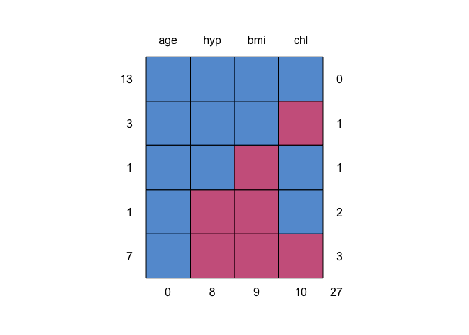
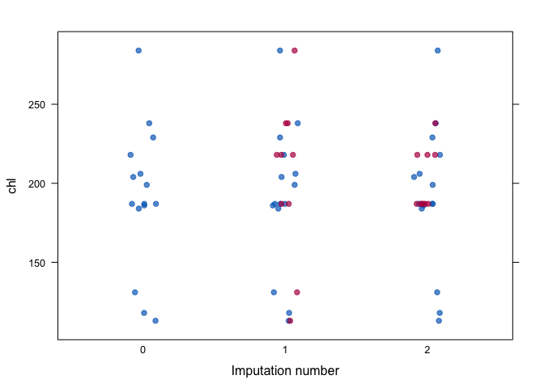

Multivariate Imputation by Chained Equations
The mice package implements a method to deal with missing data. The package creates multiple imputations (replacement values) for multivariate missing data. The method is based on Fully Conditional Specification, where each incomplete variable is imputed by a separate model. The MICE algorithm can impute mixes of continuous, binary, unordered categorical and ordered categorical data. In addition, MICE can impute continuous two-level data, and maintain consistency between imputations by means of passive imputation. Many diagnostic plots are implemented to inspect the quality of the imputations.
Installation
The mice package can be installed from CRAN as follows:
install.packages("mice")The latest version can be installed from GitHub as follows:
install.packages("devtools")
devtools::install_github(repo = "amices/mice")Minimal example
library(mice, warn.conflicts = FALSE)
# show the missing data pattern
md.pattern(nhanes)
#> age hyp bmi chl
#> 13 1 1 1 1 0
#> 3 1 1 1 0 1
#> 1 1 1 0 1 1
#> 1 1 0 0 1 2
#> 7 1 0 0 0 3
#> 0 8 9 10 27The table and the graph summarize where the missing data occur in the nhanes dataset.
# multiple impute the missing values
imp <- mice(nhanes, maxit = 2, m = 2, seed = 1)
#>
#> iter imp variable
#> 1 1 bmi hyp chl
#> 1 2 bmi hyp chl
#> 2 1 bmi hyp chl
#> 2 2 bmi hyp chl
# inspect quality of imputations
stripplot(imp, chl, pch = 19, xlab = "Imputation number")
In general, we would like the imputations to be plausible, i.e., values that could have been observed if they had not been missing.
# fit complete-data model
fit <- with(imp, lm(chl ~ age + bmi))
# pool and summarize the results
summary(pool(fit))
#> term estimate std.error statistic df p.value
#> 1 (Intercept) 9.08 73.09 0.124 4.50 0.9065
#> 2 age 35.23 17.46 2.017 1.36 0.2377
#> 3 bmi 4.69 1.94 2.417 15.25 0.0286The complete-data is fit to each imputed dataset, and the results are combined to arrive at estimates that properly account for the missing data.
mice 3.0
Version 3.0 represents a major update that implements the following features:
blocks: The main algorithm iterates over blocks. A block is simply a collection of variables. In the common MICE algorithm each block was equivalent to one variable, which - of course - is the default; Theblocksargument allows mixing univariate imputation method multivariate imputation methods. Theblocksfeature bridges two seemingly disparate approaches, joint modeling and fully conditional specification, into one framework;where: Thewhereargument is a logical matrix of the same size ofdatathat specifies which cells should be imputed. This opens up some new analytic possibilities;Multivariate tests: There are new functions
D1(),D2(),D3()andanova()that perform multivariate parameter tests on the repeated analysis from on multiply-imputed data;formulas: The oldformargument has been redesign and is now renamed toformulas. This provides an alternative way to specify imputation models that exploits the full power of R’s native formula’s.Better integration with the
tidyverseframework, especially for packagesdplyr,tibbleandbroom;Improved numerical algorithms for low-level imputation function. Better handling of duplicate variables.
Last but not least: A brand new edition AND online version of Flexible Imputation of Missing Data. Second Edition.
See MICE: Multivariate Imputation by Chained Equations for more resources.
I’ll be happy to take feedback and discuss suggestions. Please submit these through Github’s issues facility.
Resources
Books
- Van Buuren, S. (2018). Flexible Imputation of Missing Data. Second Edition.. Chapman & Hall/CRC. Boca Raton, FL.
Code of Conduct
Please note that the mice project is released with a Contributor Code of Conduct. By contributing to this project, you agree to abide by its terms.